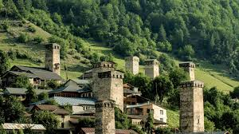
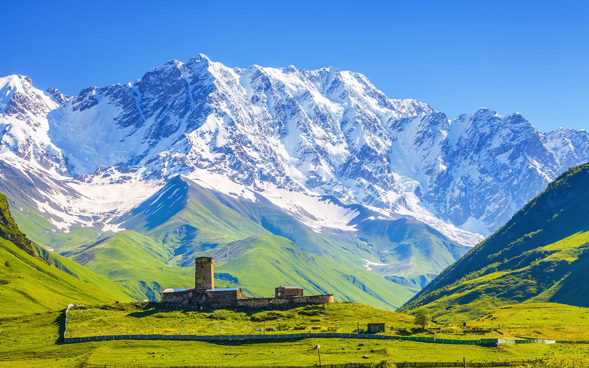
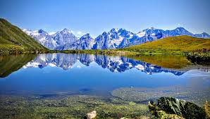
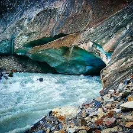
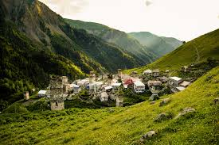

მესტია Mestia
უშგული Ushguli
ქორულდის ტბები Koruldi Lakes
ჭალაადის მყინვარი Chalaadi Glacier
სოფელი ადიში Adishi Village
სვანეთის მუზეუმი Svaneti Museum

სვანეთი Svaneti
სვანეთი საქართველოს ყველაზე მაღალმთიანი ისტორიულ-გეოგრაფიული მხარეა და იგი დასავლეთ საქართველოს ჩრდილოეთ ნაწილში მდებარეობს. სვანეთი მკვეთრად გამოხატული ინდივიდუალიზმით გამოირჩევა. მწვერვალები, ქარაფები, ციხე-კოშკები, რომლებიც თავისუფლებისა და ძლიერი სულის სიმბოლო გამხდარა, დიდი ხანია მოგზაურების, დამსვენებლებისა თუ სამთო სპორტის მოყვარულების ყურადღებას იპყრობს. ეს უძველესი კულტურის მქონე მხარე ძალიან საინტერესოა მრავალრიცხოვანი კულტურის ძეგლებით, სახასიათო ფრესკული ნიმუშებით, წეს-ჩვეულებებითა და მრავალფეროვანი, შთამბეჭდავი ბუნებით.
Svaneti is the most mountainous historical and geographical region of Georgia and is located in the northern part of Western Georgia. Svaneti is distinguished by its pronounced individualism. Peaks, gorges, fortress towers, which have become a symbol of freedom and a strong spirit, have long attracted the attention of travelers, vacationers and mountain sports enthusiasts. This region with an ancient culture is very interesting with numerous cultural monuments, characteristic frescoes, customs and diverse, impressive nature.
ყველაზე ადრეული ცნობა სვანების შესახებ გვხვდება ბერძენ და რომაელ ისტორიკოსებთან სტრაბონთან (ძვ. წ. აღ.64 /63.ა.წ.აღ23/24წწ.)და პლინიუსთან (ახ.წ. 23/24წწ).სტრაბონის მიხედვით სვანები 1 საუკუნეში ,,დიოსკურიის მთიანეთში მცხოვრებ ტომთაგან” აღემატებოდნენ მეზობელ ტომებს ძლიერებით. სვანები თავდაპირველად უფრო ვრცელ ტერიტორიაზე იყვნენ განსახლებულნი, მათ თავის დროზე ეჭირათ ლეჩხუმისა და რაჭის მნიშვნელოვანი ნაწილი. სვანები ცხოვრობდნენ დღევანდელი სამეგრელოს გარკვეულ ტერიტორიაზეც. ადრეულ საუკუნეებში სვანეთი კოლხეთის, შემდეგ კი - ეგრისის სამეფოების შემადგენელი ნაწილი იყო. ძვ.წ. IIIს-ის პირველ ნახევარში, მეფე ფარნავაზის მეფობისას, სვანეთი ქართლის სამეფოს საერითავო იყო. IV საუკუნეში იგი ლაზეთის სამეფოს მოკავშირე გახდა და ხშირად მონაწილეობდა სამეფოს საზღვრების დასაცავად წარმოებულ ლაშქრობებში. სვანეთი ყოველთვის დამოუკიდებლი იყო სანამ 1833 წელს რუსეთის დაქვემდებარებაში არ გადავიდა. 1875-76 წლებში მოხდა აჯანყება ცარიზმის პოლიტიკის წინააღმდეგ (როცა მეფის მთავრობა რეგიონში გადასახადების გაზრდას აპირებდა), რომელიც სოფელი ხალდეს განადგურებით და აჯანყებულების შეპყრობით დასრულდა. სვანეთის აჯანყებას მიეძღვნა ცნობილი სვანური სიმღერა "გაულგავხე". დღესდღეობით სვანეთი სამეგრელო-ზემო სვანეთისა და რაჭა-ლეჩხუმი-ქვემო სვანეთის ადმინისტრაციული რეგიონების შემადგენლობაში შედის.
The earliest information about the Svans is found in the Greek and Roman historians Strabo (64/63 BC) and Pliny (23/24 AD). According to Strabo, the Svans in the 1st century "of the tribes living in the Dioscuri Mountains" were stronger than their neighboring tribes. The Svans were initially settled in a larger territory, at one time they controlled a significant part of Lechkhumi and Racha. The Svans also lived in some territory of present-day Samegrelo. In the early centuries, Svaneti was a part of the kingdoms of Colchis and later of Egrisi. In the first half of the 3rd century BC, during the reign of King Parnavaz, Svaneti was a principality of the Kingdom of Kartli. In the 4th century, it became an ally of the Kingdom of Lazeti and often participated in In campaigns to protect the borders of the kingdom. Svaneti was always independent until it came under Russian rule in 1833. In 1875-76, an uprising against the policies of Tsarism took place (when the king's government intended to increase taxes in the region), which ended with the destruction of the village of Khalde and the capture of the rebels. The famous Svan song "Gaulgavkhe" was dedicated to the Svaneti uprising. Today, Svaneti is part of the Samegrelo-Zemo Svaneti and Racha-Lechkhumi-Kvemo Svaneti administrative regions.
სვანეთი საქართველოს უძველესი და უნიკალური კულტურის მქონე რეგიონია. აქ ერთმანეთს ერწყმის წარმართული და ქრისტიანული ტრადიციები. დღესაც ტარდება ძველი დღესასწაულები, მათ შორის ლამპრობა, რომელიც გაზაფხულის მოსვლის აღსანიშნავია. ზეიმობენ ასევე უფლიშს, კვირიკობას (ლაგურკას) და ლიფანალს – მიცვალებულთა მოხსენიების დღეს. სვანეთი ცნობილია ფოლკლორით, მითებით, მრავალხმიანი სიმღერებით, პოეზიითა და ცეკვებით. სვანური ქუდი, თექისგან დამზადებული და ჯვრის ნიშნით, ტრადიციული ჩაცმულობის ნაწილია. სვანური სამზარეულო ხორცისა და რძის პროდუქტებით გამოირჩევა, განსაკუთრებული კერძებია კუბდარი და ჭვიშდარი. ცნობილი სასმელია რახი და სანელებელი – სვანური მარილი. სვანეთი ოქროს მდიდარი კერაა და ხშირად ფიგურირებს ლეგენდებში ოქროსრქიან ხარებთან და ქალღმერთებთან ერთად.
Svaneti is a region of Georgia with an ancient and unique culture. Pagan and Christian traditions blend here. Even today, ancient holidays are held, including Lamprob, which marks the arrival of spring. They also celebrate Uflish, Kvirikoba (Lagurka) and Lifanali - the day of remembrance of the dead. Svaneti is famous for its folklore, myths, polyphonic songs, poetry and dances. The Svan hat, made of felt and with the sign of the cross, is part of the traditional attire. Svan cuisine is distinguished by meat and dairy products, special dishes are kubdari and chvishdari. The famous drink is rakhi and the spice - Svan salt. Svaneti is a rich source of gold and often appears in legends along with golden-horned bulls and goddesses.
სვანეთის კლიმატური პირობები მნიშვნელოვნად განსხვავდება ზღვის დონიდან სიმაღლის მიხედვით. ქვემო სვანეთში ჰავა ზომიერად ტენიანია, ზამთარი რბილი და თოვლიანი, ზაფხული კი — თბილი. ზემო სვანეთში კი მკაცრი მთა-კლიმატია: ზამთარი გრძელია, ცივი და ძლიერი თოვლებით, ზაფხული — მოკლე და გრილი. სვანეთში ნალექების რაოდენობა მეტწილად მაღალია, რაც ხელს უწყობს მდინარეებისა და მყინვარების არსებობას. ხშირია ნისლი და მოღრუბლულობა. ასეთ კლიმატურ პირობებს სვანეთის უნიკალური ბუნებისა და ცხოვრების წესის ჩამოყალიბებაში დიდი როლი მიუძღვის.
The climatic conditions of Svaneti vary significantly depending on the altitude above sea level. In Lower Svaneti, the climate is moderately humid, with mild and snowy winters and warm summers. In Upper Svaneti, the climate is harsh mountain: winters are long, cold and snowy, and summers are short and cool. Precipitation in Svaneti is generally high, which contributes to the existence of rivers and glaciers. Fog and cloudiness are frequent. Such climatic conditions play a major role in shaping the unique nature and lifestyle of Svaneti.
სვანეთი უზარმაზარ მთებთან და კლდეებთან ჰარმონიულად შერწყმული კოშკოვანი სოფლებით, ქართული ხუროთმოძღვრების, ჭედურობისა თუ მხატვრობის მნიშვნელოვანი ნიმუშებით, მრავალსაუკუნოვანი კულტურით, წარუშლელ შთაბეჭდილებას ახდენს მნახველზე. სვანეთის ბუნება კი უდავოდ მომნუსხველია ალპური მდელოებით, კლდეებით, მწვერვალებით, ჩანჩქერებითა თუ ულამაზესი ალპური ტბებით. ეს მხარე ერთნაირად მიზიდველია კულტურით დაინტერესებული ადამიანებისთვის, მთამსვლელებისთვის, მოთხილემურეებისთვისა და უბრალოდ ხეტიალის, მთაში დასვენების და მასშტაბური ხედების მოყვარულთათვის.
Svaneti, with its towering villages harmoniously combined with huge mountains and cliffs, significant examples of Georgian architecture, carving and painting, and centuries-old culture, makes an indelible impression on the visitor. The nature of Svaneti is undoubtedly captivating with alpine meadows, rocks, peaks, waterfalls and beautiful alpine lakes. This region is equally attractive to people interested in culture, climbers, skiers and simply lovers of wandering, mountain relaxation and large-scale views.
ვიკრიბებით: მეტრო რუსთაველთან. რედისონი - ველოსიპედის ძეგლთან 6:45 სთ-დან. გავდივართ 7:00 სთ-ზე.(გასვლისას ვინც არ იქნება, ვერ დაველოდებით, რადგან ტური გათვლილია დროში).
We meet: at the Rustaveli metro station. Radisson - at the Bicycle Monument from 6:45 AM.We leave at 7:00 AM. (We will not wait for anyone who is not there when we leave, as the tour is timed).
რა უნდა წამოვიღოთ ტურზე:
What to bring on the tour:
წესები Rules